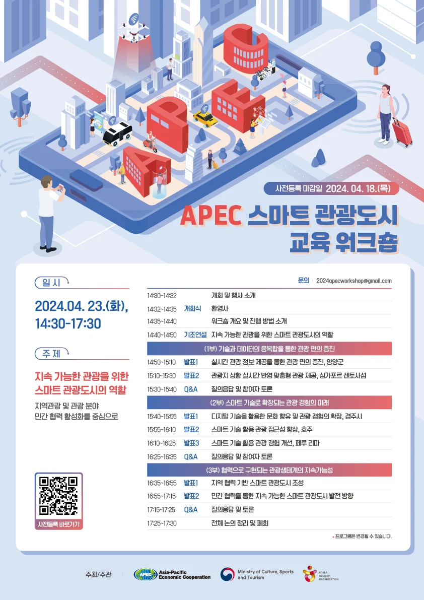

01
공고 한 장 요약 — 무엇을 하라는 사업인가
- 사업명
- AI·스마트도시 혁신인재육성 사업 (국토교통부 공고 제2026-1238호, 2026. 9. 29.)
- 목적
- AI 시티로의 변화와 스마트도시 산업계 수요를 반영해 AI·스마트도시 핵심 전문인력 양성
- 규모
- 총 36억 원 · 3년(’26~’28) · 4년제 대학 4곳(비수도권 2곳 이상) · 대학별 연 국고 2.8억 원 + 대학 부담 25% 이상
- 대상
- 전일제 대학원 석·박사과정 — AI·스마트도시 학과 또는 두 학과 이상을 묶은 전문 트랙
- 두 축
- 학술형 — 스마트도시 교과목 중 AI 접목 교과목 학점 30% 이상
실무형 — 국내·외 인턴십 · 산학협력 · 국제협력 필수, 실무형 성과지표가 전체 지표의 40% 이상 - 주관 · 문의
- 국토교통부 도시경제과 · 국토교통과학기술진흥원(KAIA)
워크숍은 공고 어디에 들어가나
① 실무형 프로그램의 한 칸공고는 실무형 프로그램을 「산업체·지자체 연계 실무형 프로그램, 국제화 프로그램」이라 부르고, 사업비 기준에 워크숍을 직접 적어 두었습니다.
국내·외 연수 여비 : 참여학생의 단기 국내·외 연수 워크샵, 세미나, 포럼, 인턴쉽 등
산학협력 교육 연구 및 창업 지원비 : 현장실습, 창업교육, 인턴십, 취·창업워크숍, 세미나 등
② 그래서 워크숍 하나가 여러 점수를 건드립니다잘 짠 워크숍 한 번은 산학협력(건) · 국제협력(건) · 교육생(명) · 취·창업교육(건)이라는 성과지표를 동시에 만듭니다. 그리고 서면평가 100점 중 35점짜리 항목에 근거가 됩니다(④에서 봅니다).
한 줄로 — 이 과제의 워크숍은 「행사」가 아니라 사업계획서에 숫자로 적히는 실무형 프로그램입니다.
02
본보기 해부 — 2024 APEC 스마트 관광도시 교육 워크숍

누르면 크게 · 출처 APEC · 문화체육관광부 · 한국관광공사
2024. 4. 23.(화) 14:30~17:30, 세 시간. 주제는 「지속 가능한 관광을 위한 스마트 관광도시의 역할」 하나이고, 그 아래를 세 부로 갈랐습니다.
1부 · 편의기술 · 데이터 융복합양양군 ↔ 싱가포르 센토사
2부 · 경험스마트 기술로 확장경주시 ↔ 호주 · 페루 리마
3부 · 지속가능성협력으로 만드는 생태계지역 협력 · 민간 협력
이 프로그램에서 그대로 가져올 규칙 다섯:
- 주제는 한 문장, 질문은 세 개. 「스마트관광」처럼 넓게 두지 않고 「지속 가능한 관광을 위한 ~의 역할」처럼 무엇을 위해를 박았습니다.
- 부마다 국내 한 곳 + 해외 한 곳. 같은 질문에 두 도시가 답하게 해야 비교가 생깁니다. 국내만이면 자랑, 해외만이면 남의 얘기입니다.
- 부의 순서가 이야기다. 편의(쓰기 쉬움) → 경험(즐거움) → 지속가능성(누가 계속 굴리나). 기술에서 시작해 사람과 협력으로 끝납니다.
- 마지막 부는 「누가 함께하나」. 3부는 도시가 아니라 지역 · 민간이 무대에 섭니다 — 공고의 산학협력 · 국제협력과 같은 자리입니다.
- 주최 · 주관을 밝힌다. APEC · 문화체육관광부 · 한국관광공사. 누가 돈을 대고 누가 운영하는지가 포스터에 보입니다.
03
과제 — 우리 대학의 첫 워크숍 프로그램 짜기
상황 · 우리 대학이 이 사업에 선정되어 관광 × AI·스마트도시 전문 트랙을 열었다고 가정합니다. 1차년도(’26. 11. ~ ’27. 8.) 안에 대학원생 · 지자체 · 기업 · 해외 기관이 함께하는 3시간 워크숍을 한 번 엽니다. 그 프로그램을 짭니다.
지켜야 할 조건 여섯
- 3부 구성 · 3시간 안팎. APEC처럼 주제 한 문장 아래 1 · 2 · 3부.
- 부마다 국내 도시(또는 기관) 1 + 해외 도시(또는 기관) 1. 국내는 경북 시군 하나 이상을 꼭 넣습니다(파트 01 · 파트 12에서 다룬 도시 활용).
- 공고의 세 축을 한 번씩 건드린다. 1부는 학술형(AI 접목 교과와 연결), 2부는 산학협력(지자체 · 기업 연계), 3부는 국제협력 또는 창업.
- 해외 사례는 근거 있는 곳. 파트 04 유럽 스마트관광 수도 · Green Pioneer 사례집, APEC 포스터의 센토사 · 호주 · 리마 중에서 고르면 출처가 섭니다.
- 성과지표 셋 이상을 숫자로. 공고 정량지표 목록(교육생 · 산학협력 · 국제협력 · 취·창업교육 · 국내/해외 인턴십)에서 고르고, 그중 둘 이상은 실무형 지표로.
- 모호한 말 금지. 공고 원문이 이렇게 적습니다 — 「~할 수도 있다」 「~이 가능하다」 「~을 고려하고 있다」 같은 표현은 불가능한 것으로 간주합니다.
협력할 수 있다참여를 고려 중확산이 가능하다협약 2건 체결 · 대학원생 20명 참가
제출물 — A4 두 장
- 1장 · 포스터
- APEC 포스터처럼 한 장으로 — 워크숍 제목 · 주제 한 문장 · 일시 · 장소 · 1~3부(발표 도시 · 기관) · 주최 · 주관 · 협력. 아래 ⑤의 틀을 쓰거나 Canva · PPT로 직접 디자인해도 됩니다.
- 2장 · 설계표
- ⑤의 표를 채웁니다 — 부별 질문 · 국내 · 해외 · 왜 이 짝인가 · 공고의 어느 축 · 성과지표, 그리고 이 워크숍이 평가표 어느 항목의 근거가 되는지.
- 발표
- 팀당 5분 — 포스터를 띄우고 「왜 이 두 도시를 한 부에 세웠나」를 부마다 한 문장씩.
04
평가표에 대 보기 — 워크숍이 받쳐 주는 35점
공고의 서면평가는 100점입니다. 그중 워크숍 한 번이 직접 근거가 되는 항목이 넷, 합쳐 35점입니다. 설계표 마지막 칸에 「이 워크숍은 어느 항목의 증빙이 되나」를 적을 때 이 그림을 봅니다.
짝 맞추기 — 2부(산학협력)는 「교과목 · 실무형」과 「네트워크」를, 3부(국제협력 · 창업)는 「창업지원」과 「확산」을 받쳐 주게 짜면 네 항목이 고르게 덮입니다.
05
양식 — 포스터 틀과 설계표
1장 · 포스터 틀 (예시는 형식만 보여 줍니다)
AI · SMART TOURISM CITY WORKSHOP[워크숍 제목]주제 · 「[무엇을 위한] AI 스마트관광도시의 [역할 / 과제]」 · [일시] · [장소]
1부 · 학술
[질문 한 줄]
국내 [경북 시군] ↔ 해외 [도시] · 연결 교과 [AI 접목 교과목명]
국내 [경북 시군] ↔ 해외 [도시] · 연결 교과 [AI 접목 교과목명]
2부 · 산학
[질문 한 줄]
국내 [지자체 · 기업] ↔ 해외 [도시 · 기업] · 대학원생 현장 과제 · 인턴십 연결
국내 [지자체 · 기업] ↔ 해외 [도시 · 기업] · 대학원생 현장 과제 · 인턴십 연결
3부 · 국제 · 창업
[질문 한 줄]
[해외 대학 · 기관] · [창업 기업 · 지원기관] · 협약 · 창업 멘토링
[해외 대학 · 기관] · [창업 기업 · 지원기관] · 협약 · 창업 멘토링
주최 [대학] · 주관 [사업단] · 협력 [지자체 · 기업 · 해외 기관] · 지원 국토교통부 · 국토교통과학기술진흥원(가정)
2장 · 설계표
| 부 | 질문 한 줄 | 국내 | 해외 | 왜 이 짝인가 | 공고의 축 | 성과지표 (숫자) |
|---|---|---|---|---|---|---|
| 1부 | 예) 관광객 흐름을 AI는 어떻게 읽나 | 경북 시군 | 해외 도시 | 같은 문제 · 다른 풀이 | 학술형 | 교육생 30명 |
| 2부 | 지자체 · 기업 | 실무형 · 산학협력 | 산학협력 2건 | |||
| 3부 | 해외 대학 · 기관 | 실무형 · 국제협력 / 창업 | 국제협력 1건 · 취·창업교육 1건 |
표 아래에 두 줄을 덧붙입니다 — ① 이 워크숍이 근거가 되는 평가 항목(④의 ★ 넷 중) · ② 끝난 뒤 남는 것(협약서 · 발표집 · 인턴 자리 · 창업 아이디어 등 증빙이 되는 결과물).
06
내기 전에 스스로 묻는 다섯 가지
- 주제가 한 문장인가? 「스마트관광 워크숍」은 주제가 아니라 이름입니다. 무엇을 위해가 들어갔나요?
- 부마다 국내와 해외가 같은 질문에 답하나? 두 발표가 서로 다른 얘기를 하면 짝이 아닙니다.
- 경북 시군이 하나라도 무대에 섰나?
- 성과지표가 숫자이고, 둘 이상이 실무형인가? 노란 가정치를 우리 팀 숫자로 바꿨나요?
- 「~할 수 있다」가 남아 있지 않나? 공고는 그 말을 「못 한다」로 읽습니다.
출처 — 국토교통부 공고 제2026-1238호 · 「AI·스마트도시 혁신인재육성 사업」 공모지침(2026. 9. 29.) · 2024 APEC 스마트 관광도시 교육 워크숍 포스터. 공고 원문은 국토교통부 · 국토교통과학기술진흥원 누리집에서 확인합니다.